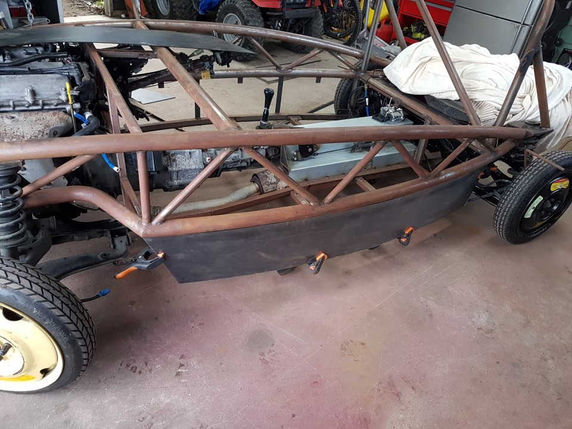
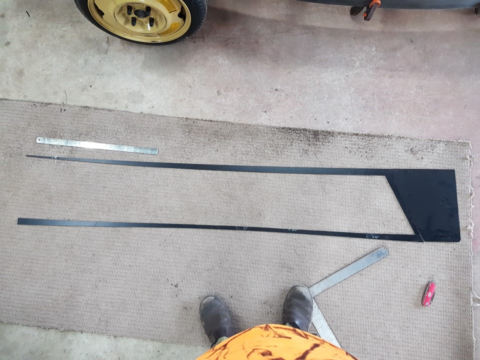

Side Panels
Contents / Side Panels
- Hold the plastic sheet to the edge of the chassis, mark and rough cut off the excess length leaving 10-20mm each end. Remember, protective plastic coating is on the outside.
- Clamp the piece to the chassis so that the rear end is square, and the plastic is touching somewhere on the main rail.
- Using something of sufficient width to bridge the largest gap between the plastic and main rail, draw a line parallel to the main rail, this will be slightly curved.
- Remove and cut this line, a sharp knife should be sufficient.
- Refit with clamps, check for snug fit along main rail, remove and adjust if required.
- draw a line around the chassis on the plastic
- Remove and cut the final line.
- Repaeat for the other side, note, they are both slightly different so dont make a exact copy

